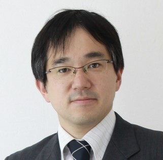

<div class="row">
    <div class="col-md-12">
        <h3>Keynote Speakers</h3>
        <p class="lead lead-sm">
                <h4 name="key1">Keynote I: Protection and use of biometric identity information –new possibilities for media security and privacy–</h4>
                
                Isao ECHIZEN, <i>Deputy Director General / Professor, National Institute of Informatics (NII), JAPAN</i> <br/>
                <a href="http://research.nii.ac.jp/~iechizen/official/members_echizen-e.html">http://research.nii.ac.jp/~iechizen/official/members_echizen-e.html</a><br/><br/>
                <b>Abstract</b>: The growing presence of high-performance cameras and microphones throughout the everyday environment has enabled the remote acquisition of biometric identity information such as the face, voice, and gait and even fingerprints, veins, and iris that can be easily shared in cyberspace. This capability poses a threat in that it provides other means of “spoofing” biometric authentication systems in order to commit fraud. Measures must thus be taken to protect such systems against the misuse of biometric information. On the other hand, since biometric authentication has become widely used as a means of personal authentication, the provision of such biometric information at the time of authentication must be made as convenient as possible. This talk introduces the challenges faced regarding security and privacy against the acquisition of a person’s biometric identity information and the distribution of that information in cyberspace on the basis of that person’s wishes while maintaining the practical convenience of biometric authentication. It also describes fruitful demonstration testing using a prototype aimed at meeting these challenges.<br/><br/>
                <b>Biography</b>: Isao ECHIZEN received B.S., M.S., and D.E. degrees from the Tokyo Institute of Technology, Japan, in 1995, 1997, and 2003, respectively. He joined Hitachi, Ltd. in 1997, and until 2007 was a research engineer in the company's systems development laboratory. He is currently a deputy director general of the National Institute of Informatics (NII), a professor and director of the Information and Society Research Division of NII, and a professor in the Department of Informatics, the School of Multidisciplinary Sciences, the Graduate University For Advanced Studies (SOKENDAI). He is also a visiting professor at Tsuda University and was a visiting professor at the University of Freiburg in 2010 and at the University of Halle-Wittenberg in 2011. His research has focused on information security and media security and privacy. He received the Best Paper Award from the IPSJ in 2005 and 2014, the Fujio Frontier Award and the Image Electronics Technology Award in 2010, the One of the Best Papers Award from the Information Security and Privacy Conference and the IPSJ Nagao Special Researcher Award in 2011, the Docomo Mobile Science Award in 2014, the Information Security Cultural Award in 2016, and the Best Paper Award at the IEEE WIFS 2017. He is a member of the Information Forensics and Security Technical Committee and the IEEE Signal Processing Society.<br/><br/>

                <h4 name="key2">Keynote II: On Liquid Software and the Programmable World</h4>
                
                Cesare PAUTASSO, <i>Professor, University of Lugano (USI), SWITZERLAND</i> <br/>
                <a href="http://www.pautasso.info">http://www.pautasso.info</a><br/><br/>
                <b>Abstract</b>: Service-oriented computing has profoundly affected the personal computing experience. Users no longer run every application and store their data on a single computer. Instead they own and operate a complex multi-device ensemble made of desktop computers, laptops, tablets, phones, watches, glasses, cars, or any sort of internet-connected thing to manage their personal information and accomplish their tasks by accessing software delivered as a service. Many approaches to achieve a liquid user experience whereby data and software can seamlessly flow and adapt across smart devices are starting to appear within proprietary platforms relying on centralized solutions, where data is conveniently stored in the Cloud, outside the control of the users producing and consuming it. In this talk we discuss how the open Web currently undergoing a re-decentralization might still play an important role within a programmable smart world.<br/><br/>
                <b>Biography</b>: Cesare Pautasso is full professor at the Software Institute of the Faculty of Informatics at the University of Lugano, Switzerland. Previously he was a researcher at the IBM Zurich Research Lab and a senior researcher at ETH Zurich. He completed his graduate studies with a Ph.D. from ETH Zurich in 2004. His research group focuses on building experimental systems to explore the intersection of Software Architecture, Web Engineering and Business Process Management with research projects on liquid software, RESTful conversation mining, microservice performance benchmarking, and interactive Web presentations. He was the general chair of the ICWE 2016 and ECOWS 2011, program co-chair of ICSOC 2013, ECOWS 2010 and Software Composition 2008. He has also started the series of International Workshops on RESTful Design (WS-REST) at the WWW conference. He is co-editor of the IEEE Software Insights department. He has co-authored a book on SOA with REST: Principles, Patterns & Constraints for Building Enterprise Solutions with REST in 2012 and is currently finishing another titled "Just Send An Email: Anti-Patterns for email-centric organizations" available on Leanpub. You can find more details on <a href="http://www.pautasso.info">http://www.pautasso.info</a>and follow him <a href="https://scholar.social/@pautasso">@pautasso@scholar.social</a><br/><br/>
                
                <h4 name="key3">Keynote III: Computational Behaviour Analysis for Cyber-Physical Systems within Smart World</h4>
                
                Liming (Luke) CHEN, <i>Professor, De Montfort University, UK</i> <br/><br/>
                <b>Abstract</b>: We are living in an increasingly smarter world where we do business, communicate and recreate among and across physical, cyber, social and mental spaces. Cyber-physical systems (CPS) offers mechanisms, technologies and tools which integrate and interweave physical entities, e.g. the internet of things, smart objects and devices and embedded systems, cyber entities, e.g. apps, social software and algorithms, and mental machinery, to support and facilitate cross-space multi-modal interactions and functionalities. The challenge is how smart CPSs should or can be in order to meet varying needs of different cohorts of users, and one of the core enabling technologies is computational behaviour analysis which can discover individual users’ ways of performing tasks, thus supporting advanced features, such as adaptation, personalisation and decision-making recommendation. In this talk the speaker will characterise the smart world concepts, and examine closely the research issues, methodologies and approaches to computational behaviour analysis which underpin the new wave smart cyber-physical systems. After this he will present his recent research and initial results in e-learning, healthcare and social network analysis describing the latest behaviour modelling and analysis technologies. He will then discuss research challenges and future directions which are aimed at stimulating and enlightening new ideas and approaches in this emerging research area.<br/><br/>
                <b>Biography</b>: Liming (Luke) Chen is Professor of Computer Science in the School of Computer Science and Informatics, De Montfort University, UK. He received his BEng and MEng from Beijing Institute of Technology (BIT), China, and his Ph.D in Artificial Intelligence from De Montfort University, UK. His current research interests include data analytics, pervasive computing, artificial intelligence, user-centred intelligent systems and their applications in smart healthcare. Liming is an IET Fellow, an IEEE Senior Member, a co-founder and co-director of the UK-China Gait and Health Innovation Institute, the DMU-USTB (University of Science and Technology Beijing, China) Joint Research Lab. on Smart Healthcare, and the IEEE CIS ”User-centred Smart Systems” Task Force. He is currently the coordinator of the EU Horizon2020 MSCA ITN ACROSSING project, and has serves as the principal investigator for the EU AAL PIA project, the MobileSage project and FP7 MICHELANGELO project, and a number of projects funded by industry and third countries. Liming has over 200 publications in internationally recognised journals, book series and conferences. He is the general chair or program chair for IEEE Smart World Congress 2019, IEEE UIC2017, IEEE HealthCom2017, SAI Computing 2017, IEEE UIC2016, IntelliSys2016, MoMM2015/2014/2013, SAI2015/2013, IWAAL2014, UCAMI2013, and an organising chair of many workshops such as Romart-City2016 and SAGAware2015/2012, associate editor of IEEE THMS, assistant EIC for IJPCC and guest editors for IEEE THMS, PMC and IJDSN. He has delivered over 20 talks, keynotes and seminars in various forums, conferences, industry and academic events.</a><br/><br/>

                <h4 name="key4">Keynote IV: Autonomic Computing for self-improving dependability in Large-Scale Computing System</h4>
                
                Yuanshun DAI, <i>Dean of School of Cybersecurity / Professor, University of Electronic Science and Technology of China, CHINA</i> <br/>
                <a href="http://faculty.uestc.edu.cn/daiyuanshun">http://faculty.uestc.edu.cn/daiyuanshun</a><br/><br/>
                <b>Abstract</b>: In Large Scale Computing System (LSCS), there is a critical and challenging issue: it is almost impossible for humans to manually diagnose/recover/defend numerous faults/failures/threatens/attacks of a great number of distributed components in a timely manner due to the large scale. The work presneted integration of Artificial Intelligence into dependability issues of LSNS. It proposed a prototype technology to self-improve the reliability for LSNS to enable a LSCS self-learning capability. The model systematically built the architecture of BANS (Bionic Autonomic Nervous System) that is a kind of nature-inspired technology. The BANS architecture implemented cyber-neurons/axons/peripheral nerves/central nerves, and the AI algorithms embedded in the BANS combined Neural Network, Fuzzy Logic,and Multi-value Diagrams for supervised machine-learning and reinforcement self-learning. This innovative technology enabled LSCS the capability of self-diagnosis and self-healing functions.<br/><br/>
                <b>Biography</b>: Dr. Dai is Professor of University of Electronics Science and Technology of China (UESTC), and Dean of School of Cybersecurity at UESTC. Dr. Dai’s research mainly focuses on Reliability Modeling and Optimization for Large-Scale Networking Systems (LSNS). He has published about 200 articles, where there are 4 books, 128 journal papers including 56 IEEE/ACM Transactions papers, and 40 conference papers including 2 Best Paper Awards. According to Google Scholar, Dr. Dai’s papers are cited by others 4452 times and his h-index is 38 and i10-index is 88. Dr. Dai is continuously elected as “Chinese Most Cited Researchers” by Elsevier since 2015 every year till now, and was ranked No. 2 in 2017 in China in the field of “Safety, Risk, Reliability and Quality”. He is currently serving as the Associate Editor for IEEE Transactions on Reliability. Dr. Dai was also invited as Keynote Speakers for IEEE ISORC’05, ChinaSoft’11, ICCT’12 and iThings’16 etc. </a><br/><br/>

                <h4 name="key5">Keynote V: Ranking and Scoring for Data Analytics and Combinatorial Fusion</h4>
                
                Frank HSU, <i>Clavius Distinguished Professor / Director of Laboratory of Informatics and Data Mining, Fordham University, USA</i> <br/>
                <a href="https://www.fordham.edu/info/25112/cis_faculty_and_administration/7484/frank_hsu">https://www.fordham.edu/info/25112/cis_faculty_and_administration/7484/frank_hsu</a><br/><br/>
                <b>Abstract</b>: In the Cyber-Physical-Natural (CPN) ecosystem, everyone is an information user and an information provider. This level of complexity has produced ample opportunity but created many challenges for data analytics and model fusion. The situation in the big data era requires intricate experiments with more variables (cues, criteria, features, attributes, or indicators) and larger number of hypotheses. In a new data analytic paradigm, various ensemble methods combining multiple models or multiple machine learning algorithms are now frequently used to improve forecasting, prediction, and decision making. However, it remains to be a challenging problem as to when and how to combine these models or systems.
                This keynote presentation will cover the design of intelligent scoring systems and discuss when and how multiple scoring systems (MSS’s) should be combined using rank-score characteristic (RSC) function and cognitive diversity (CD). We illustrate methods and practices of this new paradigm in cyber science and technology with diverse examples ranging from figure skating judgement to drug discovery virtual screening (VS), from evidence review in e-discovery to intrusion detection in cybersecurity, and from network selection in wireless communication to multi-layer combinational fusion in deep learning.
                <br/><br/>
                <b>Biography</b>: D. Frank Hsu is the Clavius Distinguished Professor of Science, a professor of Computer and Information Science, and director of the Laboratory of Informatics and Data Mining at Fordham University in New York, USA. He was chair of the CIS Department and associate dean of the Graduate School of Arts and Sciences. He held visiting positions at JAIST, Keio University, MIT, Taiwan University, and University of Paris-Sud. Hsu’s main research interests are: interconnection networks, graph database, micro- and macro-informatics, data science, and ensemble method; combinatorial fusion algorithm (CFA) with domain applications in STEM, computational social science, cognitive neuroscience, business, finance, and joint decision making. He has co-authored/co-edited 40 books and book chapters and published over 200 technical papers in journals and conference proceedings.
                Hsu is chair of New York Chapter of IEEE CIS Society and on ExCom of IEEE New York Section. He has been steering committee co-chair for the conference series I-SPAN. He has given over 400 presentations worldwide. Hsu served on many editorial boards including IEEE Transactions on Computers and IEEE Transactions on Reliability. He is on several editorial boards including IEEE Systems Journal, Brain Informatics, and Journal of Interconnection Networks. Among the honors and awards he received are IEEE-AINA Conference Best Paper Award, Foundation Fellow of the Institute of Combinatorics and Applications (ICA), Fellow of the Institute of Cognitive Informatics and Cognitive Computing (ICIC), Fellow of the New York Academy of Sciences (NYAS), and IBM Faculty Award. Hsu received his M.S. from the University of Texas at El Paso and Ph.D. from the University of Michigan. He is a Senior member of the IEEE.
                </a><br/><br/>
        </p>
    
    </div>
</div>